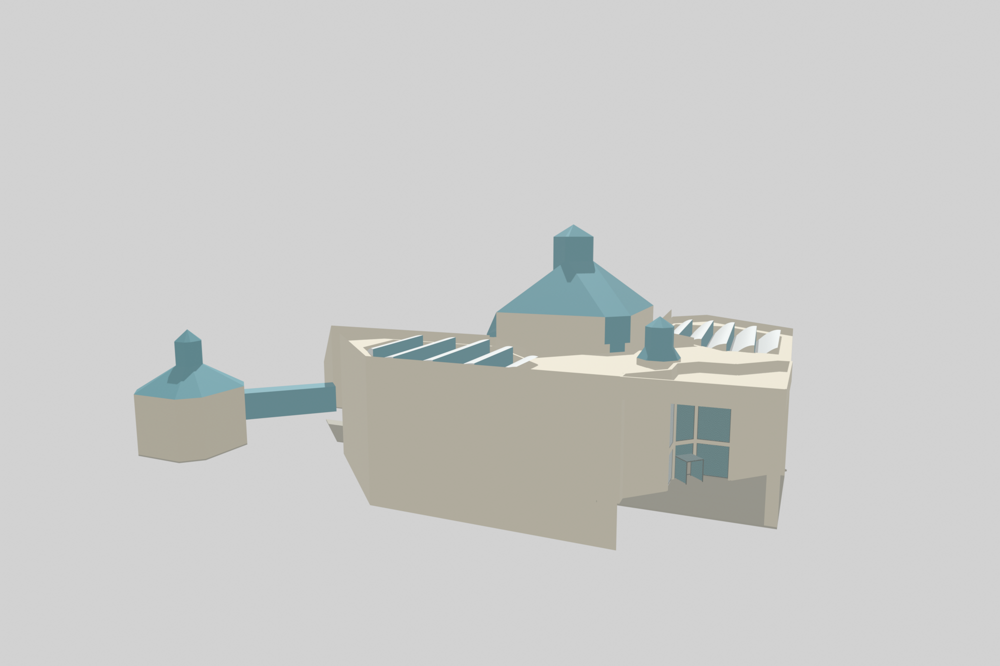
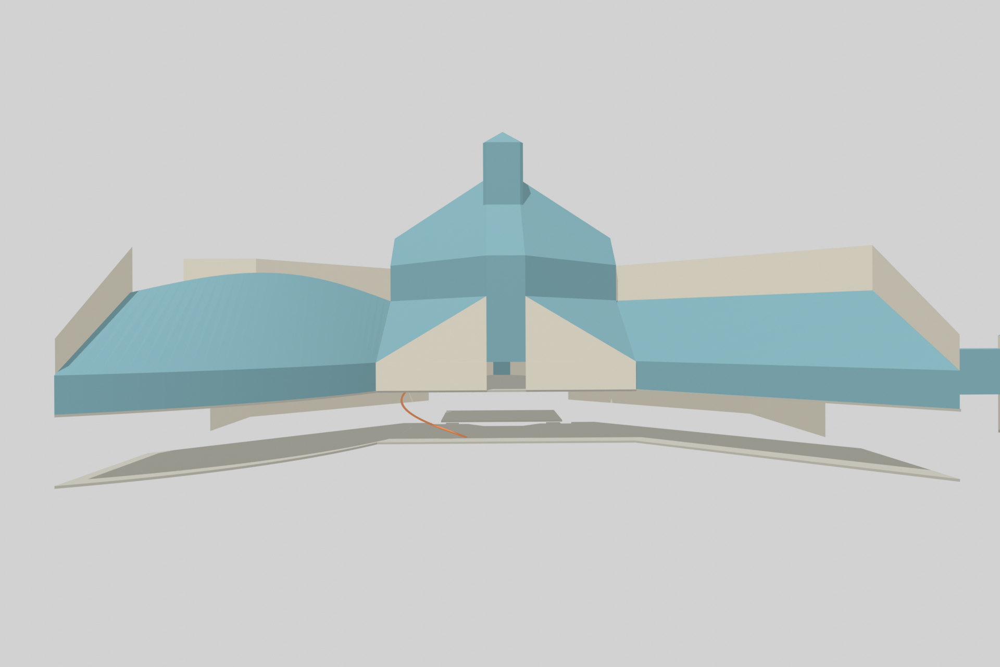
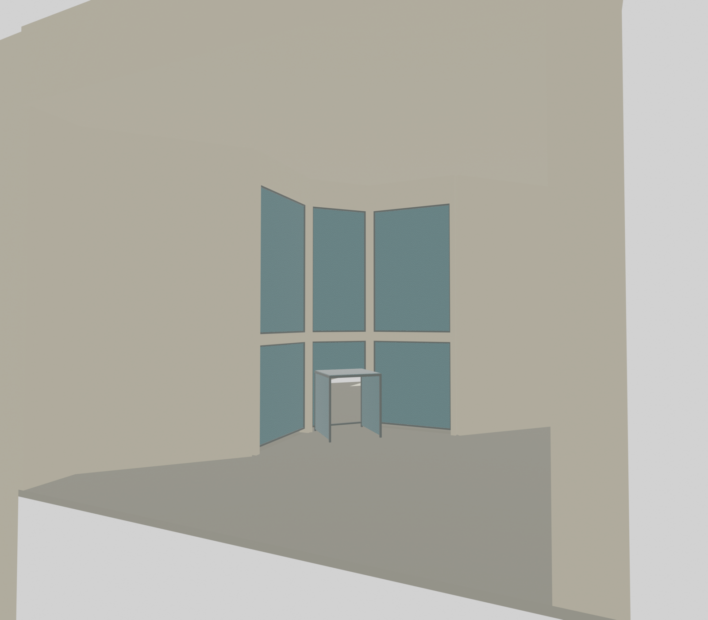

Mudam / model kontrolü
Giriş saçağı ve cephe açıklıkları, alt cam örtü, küçük okuma feneri ve üst merdivenin üç başlangıç basamağı üretildi. Aşağıdaki kontroller aynı kamera bakışındaki model ile kaynak fotoğrafı karşılaştırır.
Bütün bina henüz doğrulanmış değil. Ölçüsü açık elemanlar çalışma parametresi olarak tutuluyor. Merdivenin tam kolu, birçok cephe açıklığı, arazi ve çatı taşıyıcıları henüz tamamlanmadı.
Giriş tarafı / fotoğraf 116


Cam salonlar / fotoğraf 087




Paket takibi
| Paket | Çıktı | Açık iş |
|---|---|---|
| P06 | 3 koşullu dış kamera | İç kamera, lens/kırpma ve tam kabuk uyumu |
| P07 | Girişte kapalı kabuk hacimleri | Bütün duvarlar, taşıyıcı/kaplama ayrımı |
| P08 | 6 giriş açıklığı | Diğer katlar ve döner kapı mekanizması |
| P09 | 3 basamak + yön düzeltmesi | Tam kol, rıht zinciri, sahanlık ve alt merdiven |
Kaynak ve ölçüm kontrolleri


Giriş mesh ve geçiş denetimi · Merdiven yeniden açma denetimi · Açıklık listesi · Ölçü ve kaynak kayıtları
8 Ekim 2026. Kamera izdüşümü ile yazılım aktarımı denetlenir; bu, ölçülmüş bina doğruluğu anlamına gelmez. Eski sürümler korunur.